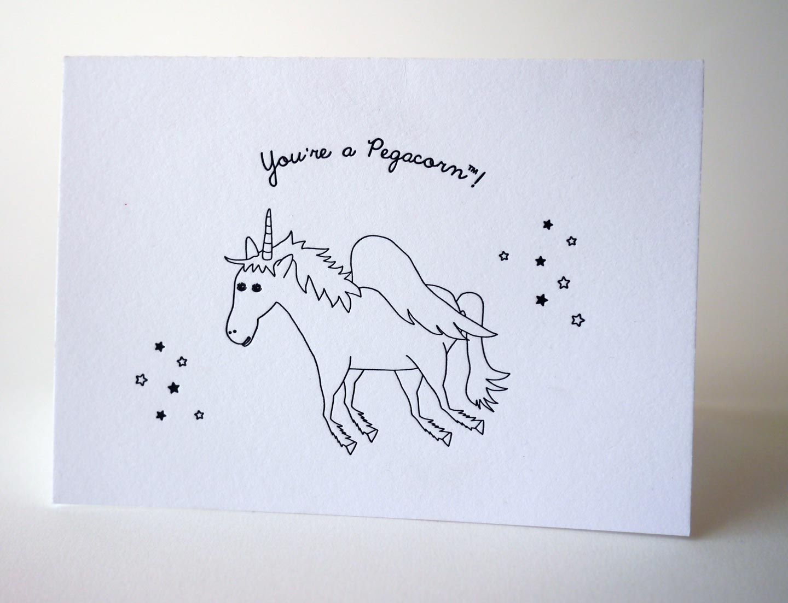

Letterpress Cards
I love greeting cards and make them as a hobby. My preferred method is letterpress because of the texture of the high-quality paper and the deep imprints that can be achieved. The letterpress cards on this page are one color and are printed on Crane’s Lettra, size A6. They come with a matching envelope and are safely sealed in a clear bag when sold or shipped. To learn more about my letterpress process, check out this page.
Card with Matching Envelope
You're a Pegacorn
Is someone you know part Unicorn and part Pegasus? Handprinted on a C&P platen press, these cards go beyond the standard Thank You card and express a special and more personal kind of gratitude.

Here are a couple of photos of Shut Up I Love You for sale in San Fransisco and Palo Alto.
Pop Up Cards
I made a series of three Pop Up Cards for project adressing nutrition. I felt using humor would get the messsage accross without being offputting. I designed these cards in AI using illustrations by Nadzeya Dzivakova, Diane Labombarbe, Liliya Shlapak, and myself.